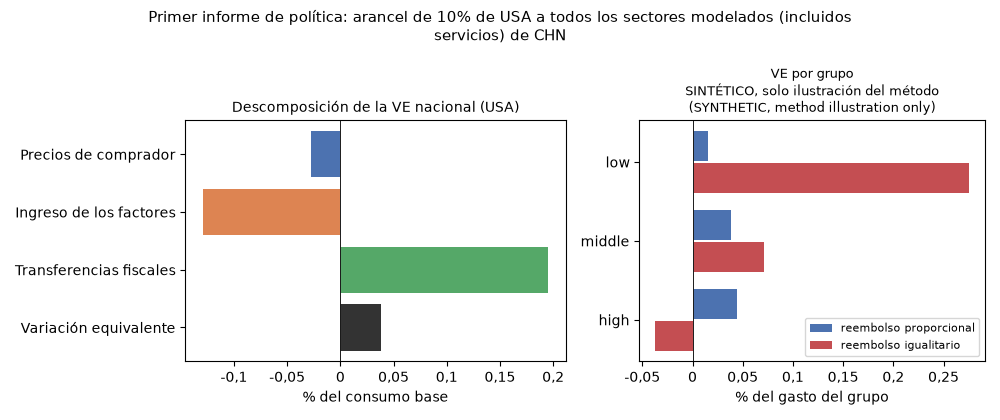

🇬🇧 English · 🇪🇸 Español
Su primer informe de política: aranceles y bienestar de los hogares
Esta página recorre un experimento de política completo con datos públicos: Estados Unidos impone un arancel de 10% a todos los sectores modelados procedentes de China, incluidos servicios. El informe resuelve un modelo de comercio de equilibrio general sobre la tabla insumo-producto interpaíses de la OCDE que se distribuye con puremacro, reporta el cambio de bienestar de Estados Unidos con su descomposición en precios, ingreso de los factores y transferencias fiscales, muestra cómo se verían afectados tres grupos de hogares, cambia un supuesto y explica lo que las cifras no dicen. No hace falta descargar nada aparte del paquete.
1. Instalación
Necesita Python 3.11 o posterior. El ejemplo pertenece al código de desarrollo 6.1; la distribución publicada más reciente es 6.0.1. Desde un checkout de desarrollo:
2. Ejecución
Un solo comando ejecuta el informe y escribe sus tablas, su figura y su registro:
La misma ejecución desde Python:
from puremacro.examples.first_brief_tariffs import run_brief
study = run_brief("first_brief", lang="es")
print(study["record"]["national"]["ev_pct_consumption"])
El directorio de salida contiene national.{md,csv,tex},
households.{md,csv,tex}, first_brief.png, headline.json (las cifras de
abajo) y manifest.json (versiones del paquete y de las bibliotecas, la cita
y el SHA-256 de la tabla, la configuración del solver, la convergencia y los
tiempos). Opciones: --importer, --exporter, --sector (all o una
sección CIIU de A a T), --tariff (0.10 = 10%), --experiment,
--groups y --lang en|es. La ejecución tarda unos segundos; el solver es el
motor exacto con method="equilibrated_newton" y tol=1e-5.
3. Vista previa: el resultado nacional
Variación equivalente (VE) del consumo de Estados Unidos, descompuesta en el cambio de los precios de comprador, del ingreso de los factores (salarios y rentas del capital) y de las transferencias fiscales (sobre todo el ingreso arancelario, devuelto como suma fija). La tabla es la salida congelada de la ejecución por defecto.
| Componente | millones de USD | % del consumo base |
|---|---|---|
| Precios de comprador | -4 646 | -0,0277 |
| Ingreso de los factores | -21 703 | -0,1294 |
| Transferencias fiscales | 32 777 | 0,1954 |
| Variación equivalente | 6 427 | 0,0383 |
Los valores positivos son ganancias. Las tres líneas son una atribución entre los dos equilibrios valorada en el numerario del modelo; lea juntos los precios de comprador y el ingreso de los factores. Sin represalias: CHN no responde.

Cómo leerla: el alza de los precios de comprador y la caída del ingreso de los factores de Estados Unidos cuestan juntas 0,157% del consumo base. El ingreso arancelario, devuelto como suma fija a los residentes de Estados Unidos, agrega 0,195%, de modo que la VE neta es pequeña y positiva (+0,038%). No es una ganancia de términos de intercambio. Con abastecimiento fijo, los productores chinos no bajan sus precios: los salarios de Estados Unidos caen alrededor de 0,14% respecto a los salarios chinos, y los términos de intercambio de Estados Unidos (valores unitarios de exportación sobre los de importación, antes de aranceles) empeoran alrededor de 0,04%. La mejora del consumo de 6 427 millones de USD acompaña cambios de -7 096 en inversión y -467 en compras de residentes en el exterior, valorados a precios base. La VE valora solo el consumo: la asignación entre usos finales cambia. Un solucionador independiente reproduce el resultado y comprueba el balance mundial de recursos; vea la validación. La descomposición de la VE es una atribución entre equilibrios, no canales causales separados. El resultado es además unilateral: China no toma represalias aquí, y una respuesta lo cambiaría.
4. Un experimento: que las empresas cambien de proveedor
python -m puremacro.examples.first_brief_tariffs --experiment sigma=2 --lang es --output first_brief_sigma2
sigma es la elasticidad de sustitución entre todos los insumos intermedios
país-sector. El resultado principal usa sigma=0 (Leontief); con sigma=2
los compradores de todos los países pueden cambiar tanto países proveedores
como sectores de insumos. No se restringe a orígenes dentro del mismo sector.
Las canastas finales siguen fijas. La tabla compara ambas variantes:
| Medida | sigma = 0 (principal) | sigma = 2 |
|---|---|---|
| Precios de comprador (millones de USD) | -4 646 | -177 385 |
| Ingreso de los factores (millones de USD) | -21 703 | 163 635 |
| Transferencias fiscales (millones de USD) | 32 777 | 37 248 |
| Variación equivalente (millones de USD) | 6 427 | 23 498 |
| Variación equivalente (% del consumo base) | 0,0383 | 0,1401 |
sigma es la elasticidad de sustitución entre todos los insumos intermedios país-sector (0 = Leontief, abastecimiento fijo); las canastas de origen del uso final no cambian.
Con sigma=2 la ganancia de Estados Unidos es varias veces mayor (+0,140% frente a +0,038% del consumo base). sigma se aplica a los compradores de insumos intermedios de todos los países, no solo de Estados Unidos. Los salarios chinos caen alrededor de 0,9% y los de Estados Unidos suben alrededor de 1,0% (ambos en el numerario del modelo; los de Estados Unidos suben 1,9% respecto a los chinos), y los términos de intercambio de Estados Unidos mejoran alrededor de 1,0%: aquí sí aparece un efecto de términos de intercambio, a diferencia del resultado principal. Las líneas de precios de comprador y de ingreso de los factores son grandes y se compensan (-177 385 y 163 635 millones de USD), así que lea su suma (-13 750 frente a -26 349). La parte de aranceles a la importación de la línea fiscal baja ligeramente (de 32 579 a 30 317 millones de USD), mientras la línea fiscal sube (de 32 777 a 37 248) porque crecen otros ingresos tributarios devueltos. sigma no es una elasticidad comercial (las canastas de origen del uso final no cambian) y la tabla no la identifica: varíela como un supuesto, no la trate como una constante conocida.
5. Hogares
Los mismos precios e ingresos de equilibrio general se trasladan a grupos de
hogares con distributional_welfare_from_results (canastas fijas). Los grupos
por defecto son SINTÉTICO, solo ilustración del método (SYNTHETIC, method illustration only): no son datos de encuesta y puremacro no incluye datos de
encuestas.
Grupos de hogares: SINTÉTICO, solo ilustración del método (SYNTHETIC, method illustration only).
| Grupo | VE, reembolso proporcional (% del gasto) | VE, reembolso igualitario (% del gasto) |
|---|---|---|
| low | 0,0152 | 0,2756 |
| middle | 0,0383 | 0,0709 |
| high | 0,0441 | -0,0373 |
| Todos los grupos (ponderado por gasto) | 0,0383 | 0,0383 |
Proporcional: el cambio en las transferencias (ingreso arancelario) se reembolsa en proporción al gasto base; igualitario: el mismo monto por hogar. La canasta media de estos grupos, ponderada por gasto, es igual a la nacional por construcción, por lo que el agregado proporcional coincide con la VE nacional.
Cómo se construyen los grupos sintéticos: tres grupos (low, middle,
high) con un gasto medio de 30 000, 60 000 y 120 000 USD por hogar al año y
un tercio de la población cada uno. Sus proporciones de gasto son la canasta
de consumo nacional de Estados Unidos s inclinada hacia la agricultura (A)
y las manufacturas, incluidos los alimentos (C):
s_g = s * (1 + d_g z) con z = 1[sector in {A, C}] - (s_A + s_C) y
d = (+0.30, 0, -0.075), de modo que la canasta media ponderada por gasto es
igual a la nacional. El presupuesto de cada grupo se divide entre ingreso de
los factores y transferencias en las proporciones nacionales de Estados
Unidos; el ingreso de los factores se mueve con los salarios y las rentas del
capital de Estados Unidos, que en este motor se mueven juntos. El cambio en
las transferencias se reembolsa de dos maneras, lado a lado: en proporción al
gasto base (para estos grupos coincide con la VE nacional) y como un monto igual por hogar (que
favorece a quienes gastan menos).
Normalice explícitamente las participaciones redondeadas dentro de cada fila antes de guardar el CSV; la comprobación exige que cada suma difiera de uno en menos de 1e-6.
Para usar sus propios grupos, escriba un CSV con las columnas group,
population_weight, annual_spending y una columna por sección CIIU de A a
T con proporciones de gasto (cada una mayor o igual a 0 y cada fila sumando
1), sin otras columnas:
python -m puremacro.examples.first_brief_tariffs --groups mis_grupos.csv --lang es --output mi_informe
A partir de una encuesta de hogares como la ENIGH de México, calcule el gasto
medio ponderado de cada grupo por sección CIIU sobre la muestra completa de
hogares, incluidos los que no compran nada en una sección, y use como
population_weight la suma de los factores de expansión. La concordancia
entre las categorías de gasto de la encuesta y las secciones CIIU le
corresponde a usted, y debe documentarla. Una proporción positiva en una
sección que la canasta de consumo del importador no compra se rechaza
nombrando la sección. Para la interfaz general y sus supuestos vea
Incidencia distributiva en los hogares.
6. Supuestos y límites
- Comparación estática. El modelo compara dos equilibrios, antes y después del arancel; no dice nada de la transición entre ellos.
- Convenciones de la tabla. El valor agregado se divide 2/3 trabajo y 1/3
capital, una convención de la biblioteca porque las tablas de la OCDE no lo
separan. La demanda final de "hogares"
Cincluye a las ISFLSH y el consumo del gobierno. La tabla es de 2019, con 20 secciones CIIU y un agregadoROWpara las economías fuera del G20. - Cierres. El ingreso arancelario y los demás ingresos fiscales se
devuelven como suma fija. El ahorro externo se mantiene fijo como
proporción del ingreso mundial (
foreign_saving_units="world_income"), lo que hace que la VE y la VC no dependan del orden de los países. La división entre las líneas de precios y de ingreso de los factores sigue dependiendo del numerario (el precio de productor del primer sector del primer país de la lista), así que lea esas dos líneas juntas. - Elasticidades. Las canastas de origen del uso final son fijas; el
abastecimiento intermedio es Leontief en el resultado principal y
sigmaes el único supuesto que varía el experimento. - Sin represalias, a menos que usted las agregue: el exportador no responde.
- Qué significa la VE. La VE es el cambio de ingreso a precios base
equivalente al arancel para la canasta de consumo, según la definición de
Bienestar hicksiano del consumo. No es una función de
bienestar social, y las filas de hogares son incidencia condicional, no un
pronóstico para hogares reales. La VE valora solo la canasta de consumo
(
C); la inversión (I) y las compras de residentes en el exterior (Cx) quedan fuera de la medida.
7. Cómo citar
La tabla es una adaptación de datos de la OCDE, redistribuida según las
condiciones de uso de la OCDE. Si publica resultados calculados con ella, cite a la OCDE:
"OECD (2023), OECD Inter-Country Input-Output Tables, http://oe.cd/icio", no a puremacro; la OCDE no está afiliada a este
proyecto ni lo respalda, y las opiniones expresadas en trabajos basados en
esta adaptación no deben presentarse como la posición oficial de la OCDE ni de
sus países miembros (vea la
sección 7 de la guía de comercio). Para citar
puremacro, use los metadatos de CITATION.cff en el repositorio.